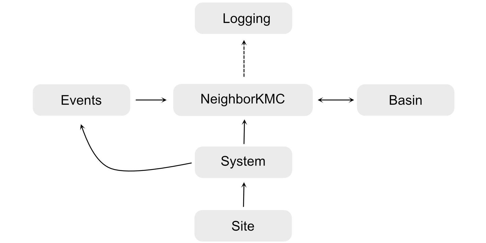

Structure of modules¶
MonteCoffee is written using object-oriented programming. The central modules are defined as shown in the figure below:
- The modules have different functions:
Site: Defines a catalytic site with properties such as site-type, coordination numbers, and nearest neighbors.
System: Defines the collection of catalytic sites.
Events: Defines the possible events in the simulation, and their rate constants.
NeighborKMC: Controls the actual simulation. Therefore, it is the central object of the simulation.
Basin: Defines the acceleration in the simulation based on rates. (N.B., in the journal article M. Jørgensen and H. Grönbeck J. Chem. Phys. 149, 114101 (2018) this module belonged to NeighborKMC, but it was later separated as the program grew.)
Logging: Handles logging of simulation by receiving input from NeighborKMC.
The site-connectivity is defined by each site’s neighborlist. The set of neighborlists for all sites defines a global connectivity pattern.
For more information about the classes, modules, and methods, please see User interface (API). The API is vital as MonteCoffee is designed as a programmable application. Thus, the user downloads the modules and prepares a simulation by making changes to the files named user_*.py.